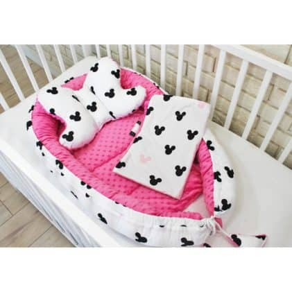

copii pătură și pernă L prințesă - banaby.ro
 gamă variată de mobilă pentru copii Cum sa cumparati Livrare si plata Contactati-ne L-V 8:00-16:00 +40 316 300 533 Nu sunteți autentificat 0 lei / 0 produse COMANDĂ cz sk hu pl en de UK at hr Kategóriák Camera copiilor Alt mobilier pentru copii Fotolii și canapele pentru copii Rafturi, dulapuri etajere și biblioteci Comode și dulapuri pentru copii Mese pentru copii Scaune Corpuri de iluminat pentru copii Paturi pentru copii Seturi de mobilă pentru copii Covoare pentru copii Pătuțuri pentru bebeluși Mobilier pentru copii Alt mobilier pentru copii Fotolii și canapele pentru copii Paturi pentru copii Seturi de mobilă pentru copii Comode și dulapuri pentru copii Mese pentru copii Pătuțuri pentru bebeluși Corpuri de iluminat pentru copii Mobilier de grădină pentru copii Rafturi, dulapuri etajere și biblioteci Covoare pentru copii Mobilier de rachita pentru copii Scaune Paturi pentru copii Accesorii pentru paturi Paturi înalte Paturi căsuță Paturi pentru copii fără barieră de protecție Paturi cu barieră pentru copii Paturi Disney Saltele pentru copii Saltele pentru copii Accesorii pentru saltea Așternuturi pentru pat Bariere de protecție paturi Pături pentru copii Saltele pentru copii Cearșaf pat Perne Cuverturi de pat Perne și pilote Lenjerii de pat copii Prosoape de față și baie pentru copii Decorațiuni Baldachine textil decorare Perdele și draperii pentru copii Postit-uri pentru copii Tapet pentru copii Totul pentru sugari Cărucioare și accesorii Leagăne și balansatoare pentru copii Pături pentru copii Coșulețe pentru bebeluși Nutriție și alăptare Premergătoare pentru copii Îmbrăcăminte bebeluși Olițe Saci de dormit și port bebe Îngrijire și baie copii Pături cu activități Scaune auto Jucării Biciclete și trotinete Corturi și piscine cu bile Jucării interactive leagăne și leagăne pentru copii școală nevoi Bucătării de jucărie jocuri pe profesie Jucării pluș Pături cu activități Sevalete pentru copii Căsuțe pentru copii Jucării de apă Jucării textile Premergătoare pentru copii Corturi și căsuțe Jucării de lemn Leagăne și balansatoare pentru copii Săniuțe și boburi Mobilă Masă sufragerie Noutăți 18 Bariere de protecție paturi Biciclete și trotinete Comode și dulapuri pentru copii Leagăne și balansatoare pentru copii Mese pentru copii Paturi pentru copii Pătuțuri pentru bebeluși Rafturi, dulapuri etajere și biblioteci Scaune Reduceri 135 Alt mobilier pentru copii Baldachine Bucătării de jucărie Cărucioare și accesorii Căsuțe pentru copii Cearșaf pat Comode și dulapuri pentru copii Corpuri de iluminat pentru copii Corturi și căsuțe Covoare pentru copii Fotolii și canapele pentru copii Îmbrăcăminte bebeluși Îngrijire și baie copii Jucării textile Lenjerii de pat copii Masă sufragerie Mese pentru copii Mobilier de grădină pentru copii Mobilier de rachita pentru copii Nutriție și alăptare Paturi pentru copii Pături pentru copii Pătuțuri pentru bebeluși Perne Perne și pilote Postit-uri pentru copii Prosoape de față și baie pentru copii Rafturi, dulapuri etajere și biblioteci Saci de dormit și port bebe Saltele pentru copii Săniuțe și boburi Scaune Tapet pentru copii textil decorare
gamă variată de mobilă pentru copii Cum sa cumparati Livrare si plata Contactati-ne L-V 8:00-16:00 +40 316 300 533 Nu sunteți autentificat 0 lei / 0 produse COMANDĂ cz sk hu pl en de UK at hr Kategóriák Camera copiilor Alt mobilier pentru copii Fotolii și canapele pentru copii Rafturi, dulapuri etajere și biblioteci Comode și dulapuri pentru copii Mese pentru copii Scaune Corpuri de iluminat pentru copii Paturi pentru copii Seturi de mobilă pentru copii Covoare pentru copii Pătuțuri pentru bebeluși Mobilier pentru copii Alt mobilier pentru copii Fotolii și canapele pentru copii Paturi pentru copii Seturi de mobilă pentru copii Comode și dulapuri pentru copii Mese pentru copii Pătuțuri pentru bebeluși Corpuri de iluminat pentru copii Mobilier de grădină pentru copii Rafturi, dulapuri etajere și biblioteci Covoare pentru copii Mobilier de rachita pentru copii Scaune Paturi pentru copii Accesorii pentru paturi Paturi înalte Paturi căsuță Paturi pentru copii fără barieră de protecție Paturi cu barieră pentru copii Paturi Disney Saltele pentru copii Saltele pentru copii Accesorii pentru saltea Așternuturi pentru pat Bariere de protecție paturi Pături pentru copii Saltele pentru copii Cearșaf pat Perne Cuverturi de pat Perne și pilote Lenjerii de pat copii Prosoape de față și baie pentru copii Decorațiuni Baldachine textil decorare Perdele și draperii pentru copii Postit-uri pentru copii Tapet pentru copii Totul pentru sugari Cărucioare și accesorii Leagăne și balansatoare pentru copii Pături pentru copii Coșulețe pentru bebeluși Nutriție și alăptare Premergătoare pentru copii Îmbrăcăminte bebeluși Olițe Saci de dormit și port bebe Îngrijire și baie copii Pături cu activități Scaune auto Jucării Biciclete și trotinete Corturi și piscine cu bile Jucării interactive leagăne și leagăne pentru copii școală nevoi Bucătării de jucărie jocuri pe profesie Jucării pluș Pături cu activități Sevalete pentru copii Căsuțe pentru copii Jucării de apă Jucării textile Premergătoare pentru copii Corturi și căsuțe Jucării de lemn Leagăne și balansatoare pentru copii Săniuțe și boburi Mobilă Masă sufragerie Noutăți 18 Bariere de protecție paturi Biciclete și trotinete Comode și dulapuri pentru copii Leagăne și balansatoare pentru copii Mese pentru copii Paturi pentru copii Pătuțuri pentru bebeluși Rafturi, dulapuri etajere și biblioteci Scaune Reduceri 135 Alt mobilier pentru copii Baldachine Bucătării de jucărie Cărucioare și accesorii Căsuțe pentru copii Cearșaf pat Comode și dulapuri pentru copii Corpuri de iluminat pentru copii Corturi și căsuțe Covoare pentru copii Fotolii și canapele pentru copii Îmbrăcăminte bebeluși Îngrijire și baie copii Jucării textile Lenjerii de pat copii Masă sufragerie Mese pentru copii Mobilier de grădină pentru copii Mobilier de rachita pentru copii Nutriție și alăptare Paturi pentru copii Pături pentru copii Pătuțuri pentru bebeluși Perne Perne și pilote Postit-uri pentru copii Prosoape de față și baie pentru copii Rafturi, dulapuri etajere și biblioteci Saci de dormit și port bebe Saltele pentru copii Săniuțe și boburi Scaune Tapet pentru copii textil decorare
Banaby.ro » Așternuturi pentru pat / Pături pentru copii / copii pătură și pernă L prințesă
sfat
copii pătură și pernă L prințesă
Setul practic de culoare alb-roz (100x75 cm + 35x25 cm), cu o pătură și o pernă de bumbac cu motiv de prințesă va asigura confortul copilului nu numai acasă, .. mai mult
Prețul nostru: 82 lei Disponibilitate in stoc Aveți o întrebare legată de acest produs ?Contactați-ne
Rating 3.5 2 RatingÎti place ? Partajează : Cod: Dimensiune: Preț: Disponibilitate: Spre lista de cumpăraturi ( 0 ) Produse preferate ( 0 ) Descriere Fotografii de la clienți Discuție Recenzii produs Vă recomandăm
copii pătură și pernă L prințesă
Setul practic de culoare alb-roz (100x75 cm + 35x25 cm), cu o pătură și o pernă de bumbac cu motiv de prințesă va asigura confortul copilului nu numai acasă, ci și pe drum sau în vacanțele bunicii.
caracteristici:
- perna de bumbac cu capitonat
- pătură cu două fețe cu căptușeală, o parte este minka de pluș și cealaltă bumbac
- căptușeala în plapumă sau pernă nu este mișcată în timpul utilizării și spălării
- cusute din materiale de cea mai înaltă calitate
- spălarea la 30 C, călcarea la cea mai scăzută temperatură, nu călcați partea monedei, nu uscați într-un uscător de rufe
Material:
- bumbac 100%
- moale de pluș (poliester)
- umplutură antialergică din silicon
dimensiuni:
- pătură 100x75 cm (+/- 3 cm)
- perna 35x25 cm (+/- 1 cm)
Fotografii de la clienți
Adaugă pozăDiscuție
Ajută alți clienti cu comanda. Scrie o impresie despre acest produs.
Adaugă un comentariuRecenzii produs
Ratingmediu 3.5 2 clienți care au
apreciat acest produs Adaugă rating la produs
Evaluarea dumneavoastră a fost trimisă cu succes
Vă mulțumim. Recenzia va fi afișată după aprobare. PRODUCT_RATING_ERRVă recomandăm:
copii pătură și pernă M panda - fucsie copii pătură și pernă L stele copii pătură și pernă L fluturi - różowa Pătură pentru copii izolată Savana Produsul a fost adăugat în coș.copii pătură și pernă L prințesă
Disponibilitate prouds: in stoc
Inapoi la magazin Coșul meuAlți clienți au mai cumpărat :
Sina de protectie – motiv floral
113 leiVândut în prezent
Cearșaf din bumbac 160/70
de la 47 lei1-3 săptămâni
Saltea JUNIOR - 160x80 cm
282 leiÎn 5 zile
Pat pentru copii Ourbaby cu sina de siguranta-cu motivul zana fluture-alb
de la 561 lei1-3 săptămâni
CUM SĂ CUMPERI Expediere și livrare Termeni și condiții Formular pentru reclamații Politica de Returnare și Schimbare Contactați-ne Categorii de top Mobilă copii Așternuturi Decorațiuni Jucării Noutăți Contul meu Autentificare Comenzile mele Inregistrare Contactecontacte: L-V 8:00-16:00
+40 316 300 533 info@banaby.ro
© 2008 - 2020 Banaby.ro - gama variata de mobila pentru copii
Noutăți, concursuri și discuții cu Ursul pe Facebook
created by Babynabytek s.r.o.
